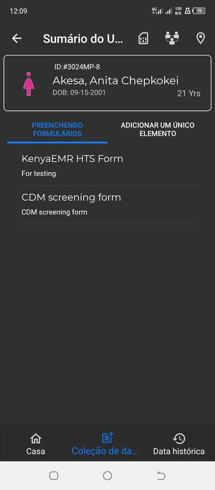
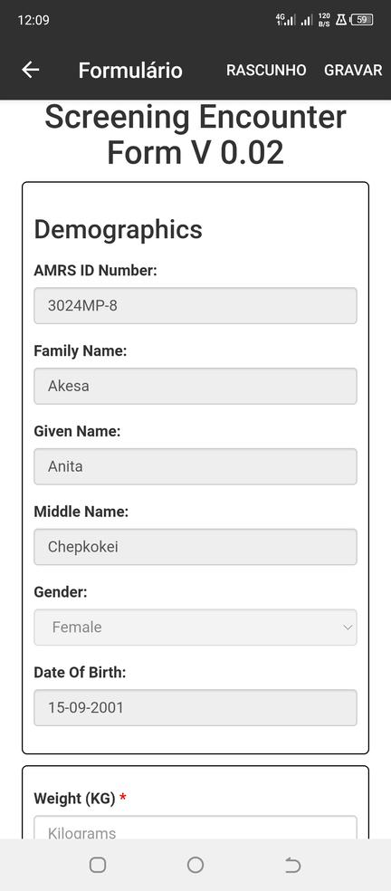

Preenchimento de formulários para um paciente
Certifique-se de ter baixado o formulário apropriado do servidor antes de preencher o formulário para
o paciente. Se não, vá para a página de formulários. Navegue até a guia ONLINE que listará todos os formulários
disponível no servidor. Selecione o formulário desejado e faça o download.
Depois de baixar o formulário com sucesso, volte para a página inicial. Em seguida, siga os seguintes passos:
- Clique no nome do paciente que você deseja na lista de pacientes.
- Selecione o formulário apropriado. Ou seja, aquele que você baixou na aba PREENCHIMENTO DE FORMULÁRIO
no menu Coleta de dados na página de resumo do paciente.

- Este formulário preencherá previamente os dados do perfil do paciente.
- Preencha o formulário para o paciente.
- Salve e sincronize o formulário com o servidor.
Observação: Os campos em formulários marcados com um asterisco devem ser preenchidos para que o formulário seja salvo como rascunho ou completo.
Exemplo. Formulário de Encontro de Triagem v 0.02
